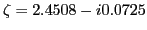
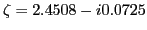
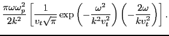
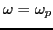

Next, we compare the numerical results with the electron plasma wave
dispersion relation, which is given by[1]
where
, and
is the plasma dispersion function. The plasma dispersion function is related
to the error function of imaginary argument by
The
function is implemented in Wolfram Mathematica. By using
function of Wolfram Mathematica, the equation (83)
can be easily solved numerically to find the root. For the parameter used in
the simulation
 ,
gives
. From this, we obtain
,
gives
. From this, we obtain
 .
.
The oscillation frequency of the electric field can be estimated by counting
the peaks in Fig. 8, from which we obtain
, which agrees the theoretic value given above. Figure
8 shows that the amplitude of the electric filed decreases
exponentially with time. Figure 9 compares the theoretic growth rate
with the simulation results, which also shows good agreement with each other.
Figure 9:
Comparison of the damping rate given by Eq.
(83)
with the simulation results.
.
|
In the weak growth rate approximation, the real frequency of electron plasma
wave is given by
for a Maxwellian plasma. For the numerical case given here,
. Using this in Eq. (86), we obtain
, which roughly agrees with the exact value
.
In the weak growth rate approximation, the growth rate is given by Eq.
(45), i.e.,
Using this, we obtain
|
 |
|
|
| |
|
 |
(88) |
From this, we obtain
Using
in Eq. (89), we obtain
, which roughly agrees with the exact value
obtained above. Note that if we used
, instead of the exact frequency
, then Eq.
(89) would give
, which is almost one
order larger than the exact value
. This
highlights the inaccuracy of the approximate formula we encounter in
textbooks[1], where
 is used to estimate
the damping rate.
yj
2016-01-26